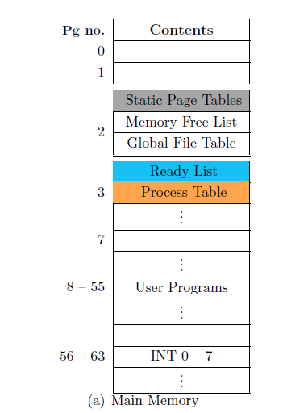
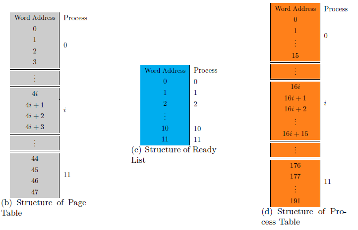

Introduction
- The ESIM architecture supports a maximum of 12 processes to be run at a time.
- Each process occupies 4 pages of the memory.
Process Structure
A process in the memory has the following structure.
- Code Area :These are pages of the memory that contain the actual code to be run on the machine. It occupies 2 pages of the memory.
- Data Area :This section consists of string data that is used in the code which cannot be stored in a register. It occupies 1 page of the memory.
- Stack : This is the user stack used in program execution. It is used to pass arguments during function calls, storing activation record of a function etc. It occupies 1 page of the memory and grows in the direction of increasing word address. The following figure shows the process structure.
Process Structure in memory. Arrow shows the direction of stack growth
Registers Associated with a Process
- Every process is allotted a unique integer identifier in the range 0 to 11, known as the PID (Process Identifier) which is stored in the PID register. This register can be used as an operand in any instruction only when executing in the kernel mode.
- The word address of the currently executing instruction is stored in the IP (Instruction Pointer) register. This register can be used as an operand in any instruction only when executing in the kernel mode.
- The base address of the user stack is stored in the BP (Base Pointer) register.
- The address of the stack top is stored in the SP (Stack Pointer) register.
Each process has its own set of values for the various registers.
Data Structures Associated with a Process
The following are the various data structures associated with a process. They are explained in the following subsections.
Ready List
The ready list : is the data structure that maintains a circular list of all the active processes. Each entry of the ready list contains a value of either 1 or 0 indicating whether the corresponding process in the memory is present in the list or not.
Process Control Block (PCB)
It contains data pertaining to the current state of the process.
Structure of Process Control Block
Note that the size of each PCB (Process Control Block) is 16 words.
The Page Table
The page table stores the exact location in the memory of the data related to a process.
- Each process has 4 entries in the page table.
- The zeroth entry corresponds to the first page of code area.
- The first entry corresponds to the second page of code area.
- The third entry corresponds to the data area.
- The fourth entry corresponds to the stack.
- Each entry contains the page number where the data specified by the logical address resides in the memory..
Storage Details of the Data Structures
The data structures used by the processes are stored statically in the memory. Their storage details are as follows.
 Ready List
- The ready list is located in words 209--220 of page 2 of the memory.
- The size of each ready list entry is one word.
- There are a total of 12 processes, thus accounting for the 12 words (12 x 1 word).
- All active processes have an entry 1 in the ready list corresponding to the location indexed by their respective PIDs.
Page Tables
- The page tables of the 12 processes are stored in the first 48 words of page 2 of the memory.
- The size of each page table is 4 words ( 4(= no. of entries) x 1(= size of an entry)= 4 words).
- There are a total of 12 processes, thus accounting for the 48 words( 12 x 4 words).
- The page tables are indexed by multiplying the PID of a process by the size of a page table to get the starting word address of the page table of that process.
Process Table
- The page 3 of the memory contains the process table.
- The process table contains the PCB of each of the 12 processes (Each entry occupies 16 words).
- There are a total of 12 processes, thus accounting for the 192 words (12 x 16 words).
- The process table is indexed by multiplying the PID of a process by the size of a PCB to get the starting word address of the PCB of that process.